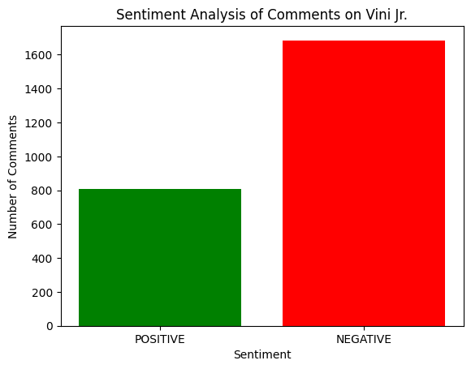

The goal of this project was to analyze public sentiment regarding Vini Jr.'s candidacy for the Ballon d'Or using comments from Reddit.
The sentiment analysis was conducted using the DistilBERT model, specifically the version distilbert-base-uncased-finetuned-sst-2-english with revision af0f99b.
Here are the results of the sentiment analysis:
Counter({'NEGATIVE': 1685, 'POSITIVE': 807})

Comment: "He scored a last minute bicycle kick to keep his team in the tournament.
That's already better than 85% of players at Euros."
Sentiment: [{'label': 'POSITIVE', 'score': 0.9994}]
Comment: "I never said that tho, it wasn’t good, it wasn’t bad."
Sentiment: [{'label': 'POSITIVE', 'score': 0.9884}]
For more detailed results, you can view the results.txt file.
The sentiment analysis indicates a clear public perception regarding Vini Jr.'s candidacy for the Ballon d'Or, with a significant number of comments reflecting negative sentiments (1,685) compared to positive ones (807). This data resonates with my perspective of Vini Jr.
Many comments express dissatisfaction with Vini Jr.'s contributions, particularly highlighting his inconsistent performances for the Brazilian national team. Vini's is the modern day system's player, which has led to a consensus that he did not merit the accolade this time around.
Moreover, the sentiment analysis echoes a sentiment of discontent regarding the broader context of the Ballon d'Or race. This suggests a collective feeling that, while Vini possesses talent, his performance for his nationald team and likability may hinder support for his candidacy.
In conclusion, the public sentiment around Vini Jr.'s Ballon d'Or aspirations reflects a critical viewpoint, emphasizing that his performances do not currently align with the expectations set by past football greats like Ronaldo and Messi.